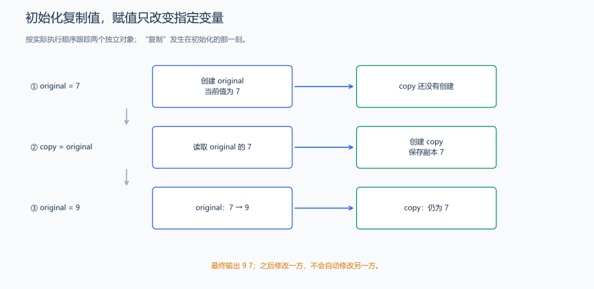

（二） 变量、数据类型与初始化
如果同一程序需要保存人数、总费用、平均分和成绩等级，就不能只问“用哪个变量名”，还要问“数据有没有小数、最大可能是多少”。类型决定存储和运算规则，变量名表示题目中的角色。
1. 声明、初始化与赋值是不同动作
int count=3; 创建名为 count 的 int 变量，并用 3 初始化。之后 count=8; 给已有变量赋新值，不创建第二个 count。初始化发生在创建时，赋值发生在对象已经存在后。
题目原文（自拟）： 程序无需输入。original 初值为 7，copy 初始化为 original 的值；把 original 改成 9，依次输出两个变量。

#include <iostream>
using namespace std;
int main() {
int original = 7;
int copy = original; // 复制当前的整数值，不建立长期关联。
original = 9; // 只修改 original，copy 仍为 7。
cout << original << ' ' << copy << '\n';
}输出 9 7。把值复制到另一个变量后，修改来源不会自动同步；引用章节才会介绍让两名称访问同一个对象的方式。
| 写法 | 含义 | 结果 |
|---|---|---|
int x=0; |
创建并初始化 | x 的初值为 0 |
int x(0); |
直接初始化 | x 的初值为 0 |
int x{};、int x{0}; |
花括号初始化 | 基本整数得到 0；有些窄化转换会被拒绝 |
int x; |
创建普通局部整数，不提供初值 | 在成功赋值前不能读取 |
x=5; |
修改已有变量 | 执行后 x 的值变为 5 |
普通局部 int x; 没有初值，成功输入或赋值后才有可用的数值。全局变量和 static 变量会先进行零初始化，static 的用法在函数章节继续讲。标识符区分大小写，score 与 Score 是两个名字；int、return 等关键字已经有语言规定的用途。
2. 从题目范围选择基本类型
| 类型 | 保存什么 | 常见比赛环境中的表示 |
|---|---|---|
int |
整数、下标 | 常见比赛环境中为 32 位，约 \(-2.1\times10^9\) 到 \(2.1\times10^9\) |
long long |
更大的整数、累计和与乘积 | 至少 64 位；常见上界约 \(9.22\times10^{18}\)，仍不能无限增大 |
double |
带小数的近似值 | 小数通常不能精确表示；精度与范围是不同问题 |
char |
单个字符或一个字节单元 | 'A'、'0' 与数字 0 不同；一个中文字符通常占多个 UTF-8 字节 |
bool |
逻辑值 | 只有 true、false；默认输出为 1、0 |
unsigned int、unsigned long long |
非负整数和位运算 | 没有负数；与有符号类型混合时要核对转换 |
先估算中间结果。 如果有 \(10^5\) 项，每项绝对值至多 \(10^9\)，累计和的绝对值至多 \(10^{14}\)，应选 long long；不能因为单项能放进 int，就把总和也放进 int。1 通常是 int 字面量，1LL 是 long long，1u 是 unsigned int，1ULL 是 unsigned long long。
sizeof(int) 返回 int 占用的字节数，sizeof(value) 查询对象大小。sizeof(char) 为 1，常见比赛环境中一个字节为 8 位。字节数描述存储大小，INT_MIN、INT_MAX 等常量则直接给出可保存的数值范围。
<climits> 提供整数范围常量，例如 INT_MIN、INT_MAX、LLONG_MAX，以及每字节的位数 CHAR_BIT。
题目原文（自拟演示）： 程序无需输入，分三行输出 int 与 long long 的字节数、int 的下界与上界、long long 的上界与每字节的位数。
分析： 用 sizeof 查询类型占用的字节数，用 INT_MIN、INT_MAX、LLONG_MAX 查询整数范围，用 CHAR_BIT 查询每字节的位数。
#include <climits> // 声明范围常量；这里不需要模板知识。
#include <iostream>
using namespace std;
int main() {
cout << sizeof(int) << ' ' << sizeof(long long) << '\n'; // 单位为字节。
cout << INT_MIN << ' ' << INT_MAX << '\n'; // 当前实现的 int 范围。
cout << LLONG_MAX << ' ' << CHAR_BIT << '\n'; // long long 上界和每字节位数。
}在常见的 32 位 int、64 位 long long 环境中，输出如下：
4 8
-2147483648 2147483647
9223372036854775807 8这些数值说明了类型能保存多大的数。做题时，再将题目中可能得到的最大结果与类型范围比较，就能决定用 int 还是 long long。模板章节还会介绍另一种查询工具 numeric_limits。
3. 单字符、文本与逻辑值
单引号写一个字符，例如 'A'；双引号写文本，例如 "ABC"。字符 '0' 有自己的编码值，不是整数 0。十进制数字字符连续排列，因此已确认 ch 是数字字符后，可用 ch-'0' 得到对应数字。
题目原文（自拟演示）： 程序无需输入。输出字符 A、数字字符 7 对应的数值，以及 false、true 的默认输出。
#include <iostream>
using namespace std;
int main() {
char grade = 'A';
char digit = '7';
bool passed = true;
cout << grade << ' ' << digit - '0' << '\n'; // 本例已保证 digit 是数字字符。
cout << false << ' ' << passed << '\n'; // 默认得到 0 1。
}输出为 A 7、0 1，各占一行。bool 的 false 表示假，true 表示真；条件判断中数字 0 转成假，非零转成真。需要输出 true/false 的文本时可用 boolalpha，输出格式章节会展示状态设置。
先区分整数、小数、字符与真假，再决定怎样计算。下一节重点解释“表达式先按什么类型算”，而不是只看接收结果的变量类型。